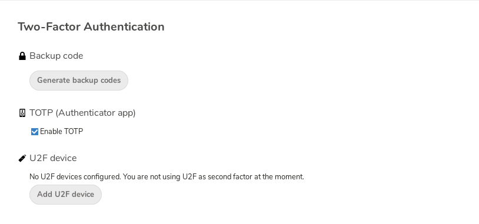

İki aşamalı kimlik doğrulamasını kullanmak
İki aşamalı kimlik doğrulaması (2FA), Nextcloud hesabınıza izinsiz erişilmesini engellemenin bir yoludur. Kimliğinizin doğrulamak için iki farklı ‘kanıt’ ister. Örneğin, bildiğiniz bir şey (bir parola gibi) ve sahip olduğunuz bir fiziksel anahtar gibi. Genellikle, ilk adımda, zaten bildiğiniz bir parolayı yazarsınız. İkinci adım ise bir kısa mesaj kodu veya telefonunuzda veya başka bir aygıtta oluşturduğunuz bir kod (sahip olduğunuz bir şey) olabilir. Nextcloud çeşitli iki aşamalı kimlik doğrulama yöntemlerini destekler ve daha fazlası da eklenebilir.
BT yöneticiniz tarafından herhangi bir iki aşamalı kimlik doğrulama uygulaması etkinleştirildiğinde, onu Kullanıcı ayarları içinden etkinleştirebilir ve yapılandırabilirsiniz. Aşağıda ayrıntılarını görebilirsiniz.
İki aşamalı kimlik doğrulamasını yapılandırmak
Kişisel ayarlarınızda iki aşamalı kimlik doğrulama ayarına bakın. Bu örnekte, Google Authenticator uyumlu zamana dayalı bir kod olan tek kullanımlık parola kullanacağız:

Telefonunuzda (veya başka bir cihazda) tek kullanımlık parola uygulaması tarafından taranabilecek parolanızı ve bir QR kodunu göreceksiniz. Uygulamaya veya araca bağlı olarak, kodu yazın veya QR kodu tarayın. Aygıtınız her 30 saniyede bir değişen bir oturum açma kodu görüntüler.
İkinci adımı kullanamadığınız durumlar için kurtarma kodları
İki aşamalı kimlik doğrulaması için her zaman yedek kodlar oluşturmalısınız. İkinci adımı doğrulayacağınız aygıt çalınırsa ya da çalışmıyorsa, hesabınızın kilidini açmak için bu kodlardan birini kullanabilirsiniz. Bu kodlar ikinci adım olarak kullanılır. Yedek kodları almak için kişisel ayarlar bölümünüze gidin ve iki faktörlü kimlik doğrulama ayarları altındaki Yedek kodlar oluştur seçeneğini kullanın:

Ardından size tek kullanımlık yedek kodların listesi görüntülenir:

Bu kodları bulabileceğiniz güvenli bir yere koymalısınız. ikinci aşama için kullandığınız cep telefonunuz gibi şeylerle bir araya koymayın. Birini kaybederseniz diğerinin sizde olduğundan emin olun. Bu kodları evde tutmak en iyisi olabilir.
İki aşamalı kimlik doğrulaması ile oturum açmak
Oturumunuzu kapattıktan sonra yeniden oturum açmanız gerektiğinde, tarayıcınız tek kullanımlık parola kodunu yazmanızı isteyecek. Yalnızca tek kullanımlık parola aşamasını değil diğerini de etkinleştirirseniz, bu oturum açma için iki aşamalı yöntemi seçebileceğiniz bir seçim ekranı göreceksiniz. Tek kullanımlık parola olarak seçin:

Kodunuzu yazın:

Kod doğruysa Nextcloud hesabınıza yönlendirileceksiniz.
Not
Kod zamanla ilişkili olduğundan, sunucunuzun ve akıllı telefonunuzun saatinin neredeyse aynı olması önemlidir. Birkaç saniyelik bir zaman farkı sorun olmaz.
Donanım anahtarlarıyla iki aşamalı kimlik doğrulamayı kullanma
Donanım anahtarıyla iki aşamalı kimlik doğrulamayı kullanabilirsiniz. Aşağıdaki aygıtların çalıştığı biliniyor:
Tek kullanımlık parola temelli:
FIDO U2F temelli:
İstemci uygulamalarını iki aşamalı kimlik doğrulaması ile kullanmak
İki aşamalı kimlik doğrulamasını etkinleştirdikten sonra, iki aşamalı kimlik doğrulama desteği sağlamayan istemciler yalnızca parola ile bağlantı kuramaz. Bu durumda, bu tür istemciler için aygıta özel parolalar oluşturmalısınız. Bunun nasıl yapılacağı hakkında ayrıntılı bilgi almak için Bağlı web tarayıcı ve aygıtların yönetimi bölümüne bakabilirsiniz.
Düşünceler
Nextcloud oturumu açmak için WebAuthn kullanıyorsanız, iki aşamalı kimlik doğrulaması için aynı kodu kullanmadığınızdan emin olun. Yoksa yalnızca tek aşama kullanıyorsunuz demektir.